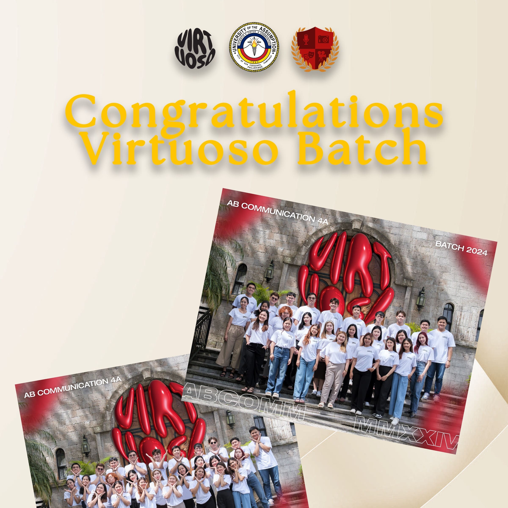

APRIL22-23
1:00PM
UA Auditorium
Mise-En-Scène (MES) Film Festival
Engage AB Communication students to participate in the competition to show their skills and potential in Filmmaking.
View Details
TBD TBD
TBD
UA Gymnasium
Tribute / Alumni Awards
To foster a positive environment and strengthen the bond of the AB Communication students and Alumni.
View Details